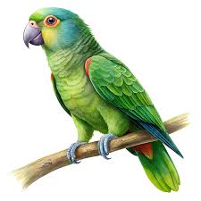
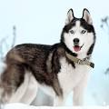

TIPOS DE MASCOTAS

Mascotas mas comunes
Loro
Gato
Conejo
Perro
Hamster
Loro

Un loro es un ave que se caracteriza especialmente por sus llamativos colores
y por su curiosa capacidad de imitar la voz humana. Presenta un pico fuerte,
duro y grueso y suele vivir en climas templados y tropicales.
Gato
Traducción del inglés-El gato, también conocido como gato doméstico o gato doméstico,
es un pequeño mamífero carnívoro domesticado. Es la única especie domesticada de la familia Felidae.
Los avances en arqueología y genética han demostrado que la domesticación del gato se produjo
en el Cercano Oriente alrededor del 7500 a.C.
Conejo
El conejo común o conejo europeo es una especie de mamífero lagomorfo de la familia Leporidae,
y el único miembro actual del género Oryctolagus.
Mide hasta 50 cm y su masa puede ser hasta 2.5 kg. Ha sido introducido en varios
continentes y es la especie que se utiliza en la cocina y en la cunicultura.
Perro
| Imagen |
Raza |
Tamaño |
| |
Pastor aleman |
Grande |
| |
Golden retriever |
grande |
 |
Husky siberiano |
Mediano |
Hamster
Los cricetinos son una subfamilia de roedores, conocidos comúnmente como hámsteres.
Se han identificado diecinueve especies actuales, agrupadas en siete géneros.
La mayoría son originarias de Oriente Medio y del sureste de los Estados Unidos